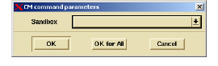
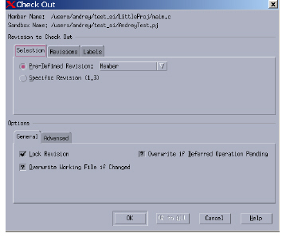
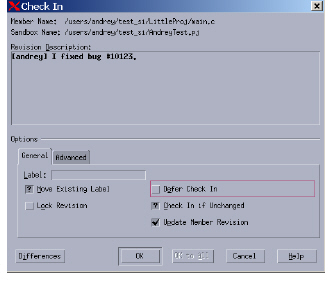

Using Source Integrity
When you select a Source Integrity option from the CM menu, DIScover presents a dialog box where you can provide comments to accompany your selection.
• Check out copies an element to a working file where you can view or modify its contents.
When checking out with Source Integrity, DIScover displays a window that asks you to specify a Sandbox for the checked out file.
Use the drop-down arrow at the right of the box to display your available sandboxes, make your selection and click OK (or OK for All for multiple files).

After you have selected the sandbox where you will store your working copy, DIScover displays a Source Integrity-generated dialog box where you can specify the details for your checkout, including lock status and comments.

When you have finished making your checkout selections, click OK (or OK to All for multiple files).
• Check in preserves changes made to an element as a new revision in the member’s history. DIScover again displays a Source Integrity-generated window that allows you to specify the details for your check in.

When you have finished making your check in selections, click OK (or OK to All for multiple files).
Note: If you want to run DIScover quality filters against the edited file prior to check in, you need to use Submission Check through your Developer Xpress client. For more information, refer to Using Submission Check.
• Lock prevents other users from changing a member you are working on. This is standard procedure when you check out an element. You can also use the Lock option from the CM menu to lock a checked out file.
• Unlock releases the exclusive ability to change a member. This is normally done by default when you check in the member. You can also use the Unlock option from the CM menu to remove the lock from a file you have checked out.
• Revert returns a member working file to its state before it was checked out.
• Resynchronize updates all elements of a master project so that all members are stamped with the same version. For example, the member revision of a particular file may be at 1.5, while you still have revision 1.2 in your sandbox. Resynchronize coordinates all revisions into a new, current version.